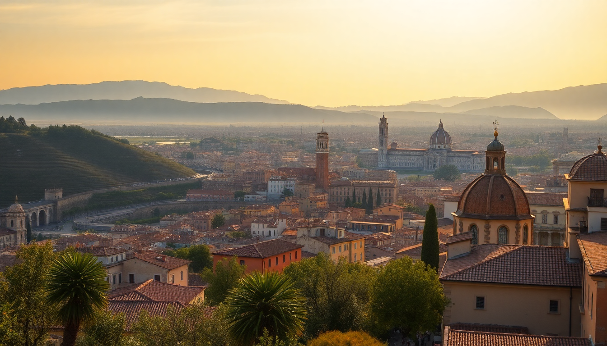

Getting Around Italy: Trains, Flights & Car Rental Tips

I’ve spent the last few weeks crisscrossing Italy—Rome to Florence by high-speed rail, a quick flight from Venice to Milan, and a rental car through the countryside near Siena. Here’s what actually worked, what didn’t, and how you can move between these cities without wasting time or money.
Should you take the train or fly between cities?
For most routes between Rome, Florence, Venice, and Milan, the train wins. High-speed lines like Trenitalia’s Frecciarossa and Italo connect the big hubs in under three hours. I took the Frecciarossa from Roma Termini to Firenze Santa Maria Novella—1.5 hours, reliable Wi-Fi, and a snack cart that saved me from overpriced station food. Flying only makes sense for longer hops, like Rome to Milan (1-hour flight, but add 2 hours for airport transfers). My advice: train for Rome-Florence-Venice, fly only if you’re doing Milan-Rome or connecting to Sicily.
What’s the best way to use trains for Rome, Florence, Venice, and Milan?
Book tickets early. Trenitalia and Italo both offer dynamic pricing—a Rome-to-Florence ticket can drop to €25 if you buy two weeks out, but hit €60 at the counter. I used the Trenitalia app for mobile tickets; no printing needed. Key stations to know:
- Roma Termini – central, chaotic, but well-connected to Metro lines A and B
- Firenze Santa Maria Novella – walkable to the Duomo in 10 minutes
- Venezia Santa Lucia – right on the Grand Canal, no bridges to drag luggage over
- Milano Centrale – massive, with direct links to the Metro and Malpensa Express
One trap: regional trains (Regionale) are cheap but slow. I accidentally boarded one from Florence to Venice—three hours instead of two, and no air conditioning in July. Stick to Frecciarossa or Italo for city-to-city.
When does renting a car actually make sense?
Only outside the cities. Driving in Rome, Florence, Venice, or Milan is a headache—ZTL (limited traffic zones) fine you automatically, parking costs €30–50 a night, and narrow streets in Florence feel like a video game. I rented from Hertz at Florence airport for a day trip to Siena and San Gimignano. That worked: open roads, free parking at agriturismos, and a GPS that actually handled Tuscan hill towns. If you’re sticking to the four anchor cities, skip the car. For the countryside, rent from a train station or airport pickup—Europcar at Milano Centrale was straightforward.
How do you get around within each city without a car?
Each city has its own rhythm. In Rome, the Metro covers Termini, Colosseo, and Vatican, but buses fill the gaps. I walked most of the historic center—Trastevere to Pantheon is a 20-minute stroll. Florence is tiny; I never used public transport except the T2 tram from the airport to Santa Maria Novella. Venice is all walking and vaporettos (water buses)—the 1-hour ACTV pass (€9.50) got me from Piazzale Roma to St. Mark’s and back. Milan has the best Metro: three lines that hit Duomo, Navigli, and Garibaldi. I bought a 48-hour ticket (€8.50) and never needed a taxi.
What about flights between cities—are they worth it?
Only for Milan-Rome or Venice-Milan. I flew Ryanair from Venice Treviso to Milan Bergamo—€30 with a small bag, but Treviso is an hour bus ride from Venice, and Bergamo is another hour from Milan city center. That’s 4 hours total door-to-door versus 2.5 hours on the train. My rule: if the train is under 3 hours, take the train. If over 3 hours (like Rome to Palermo), then fly. Budget airlines like easyJet and Volotea cover these routes from Milan Malpensa and Rome Fiumicino, but factor in airport transfer costs.
Which neighborhoods are best for easy transit access?
I stayed at Hotel Artemide near Roma Termini—10-minute walk to the Metro and trains, plus a rooftop bar that saved me after a long flight. In Florence, Hotel Davanzati is a 5-minute walk from Santa Maria Novella station and has free breakfast that beats any café queue. For Venice, Hotel Al Ponte Mocenigo is near the Santa Lucia station but quiet, with a garden courtyard. In Milan, NH Collection Milano CityLife sits right on the Metro line 5 (purple) and is a 15-minute ride to Centrale. Avoid Termini-area hostels in Rome if you value sleep—street noise is brutal.
FAQ
Can I use the same train ticket for multiple trains? No. Each ticket is valid for a specific train and time. If you miss it, you must buy a new one or pay a penalty (€10–25 for high-speed trains). Regional tickets are flexible for 4 hours after purchase, but always validate them at the green machines on the platform.
Is it cheaper to buy a rail pass like Eurail for Italy? Only if you’re taking 6+ long rides in 10 days. For a standard Rome-Florence-Venice-Milan loop, point-to-point tickets on Trenitalia or Italo are cheaper. I priced out a Eurail pass for my trip—€230 for 4 days—but my actual tickets totaled €120. Skip the pass unless you’re adding Naples, Cinque Terre, or Bologna.
Do I need an international driver’s permit to rent a car in Italy? Yes. US and Canadian licenses require an IDP from AAA or CAA. I forgot mine and Hertz still rented to me, but a friend got fined €250 in a roadside check near Siena. Get the permit before you go—it’s $20 and takes 10 minutes at AAA.
Conclusion
- Trains (Trenitalia Frecciarossa or Italo) are your best bet for Rome, Florence, Venice, and Milan—book early for the best price.
- Flights only make sense for long distances (Rome-Milan) or islands (Sicily, Sardinia)—budget airlines are fine but add transit time.
- Car rentals are for countryside day trips, not city driving—pick up at airports or stations outside ZTL zones.
- Neighborhoods next to main stations (Roma Termini, Santa Maria Novella, Santa Lucia, Milano Centrale) save you time and taxi costs.
- Walk in Florence and Venice; use Metro in Rome and Milan; buy vaporetto passes in Venice only for longer canal trips.